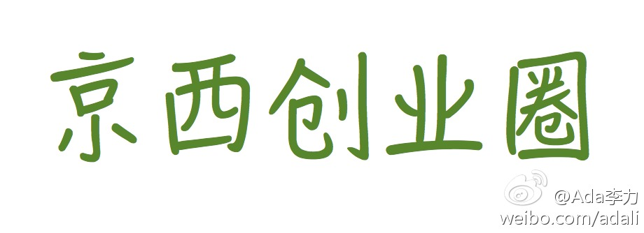

帮转。俺也去参加。@美乐家艾瑶瑶妈妈的快乐生活:5月20号下午，apache基金会的总裁Ross Gardler将会来京交流访问。 目前计划组织一个交流会，Ross Gardler会分享话题《切实可行的开源软件治理结构 (Viable OSS Governance)》目标参与者是开源社区的组织者。有兴趣的参与朋友请和我联系，linuxbqj@gmail.com
现在的IT活动和创业活动，基本都在北京北面和东面，而我感觉北京西面的居住环境更好些，但IT人士和创业人士在西面的偏少，貌似也缺少氛围。现在建了个“京西创业圈”微群，邀请居住或者办公地点在北京西面的创业者加入，大家交流运营融资等问题，或者相约一起健身等等。有兴趣加入的给我微博私信。 
我真喜欢广告词里的这个意思 － 人是主角 //@之宝妈：记得西边有个楼盘广告“京西，人是主语”@Ada李力:现在的IT活动和创业活动，基本都在北京北面和东面，而我感觉北京西面的居住环境更好些，但IT人士和创业人士在西面的偏少，貌似也缺少氛围。现在建了个“京西创业圈”微群，邀请居住或者办公地点在北京西面的创业者加入，大家交流运营融资等问题，或者相约一起健身等等。有兴趣加入的给我微博私信。
回复@北漂马达:欢迎欢迎，微信号发给我。//@北漂马达:我在西边，求加入@Ada李力:现在的IT活动和创业活动，基本都在北京北面和东面，而我感觉北京西面的居住环境更好些，但IT人士和创业人士在西面的偏少，貌似也缺少氛围。现在建了个“京西创业圈”微群，邀请居住或者办公地点在北京西面的创业者加入，大家交流运营融资等问题，或者相约一起健身等等。有兴趣加入的给我微博私信。